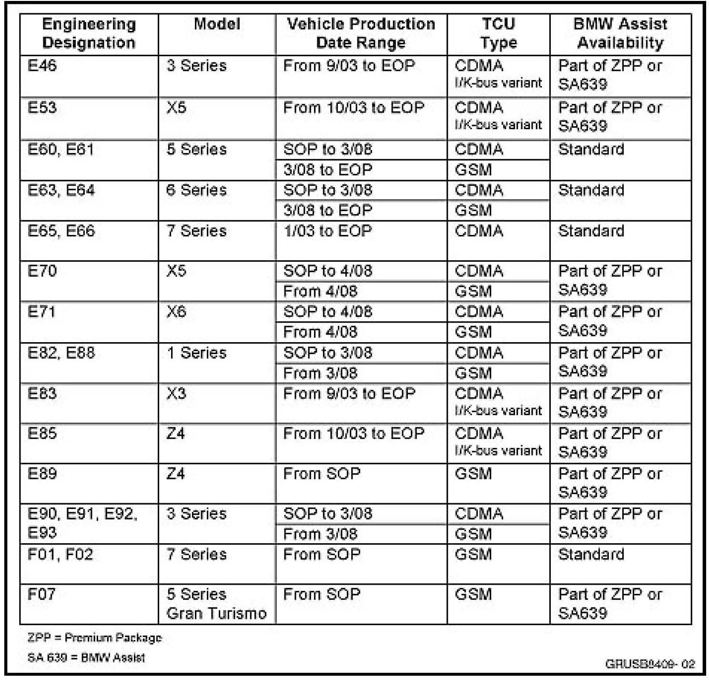
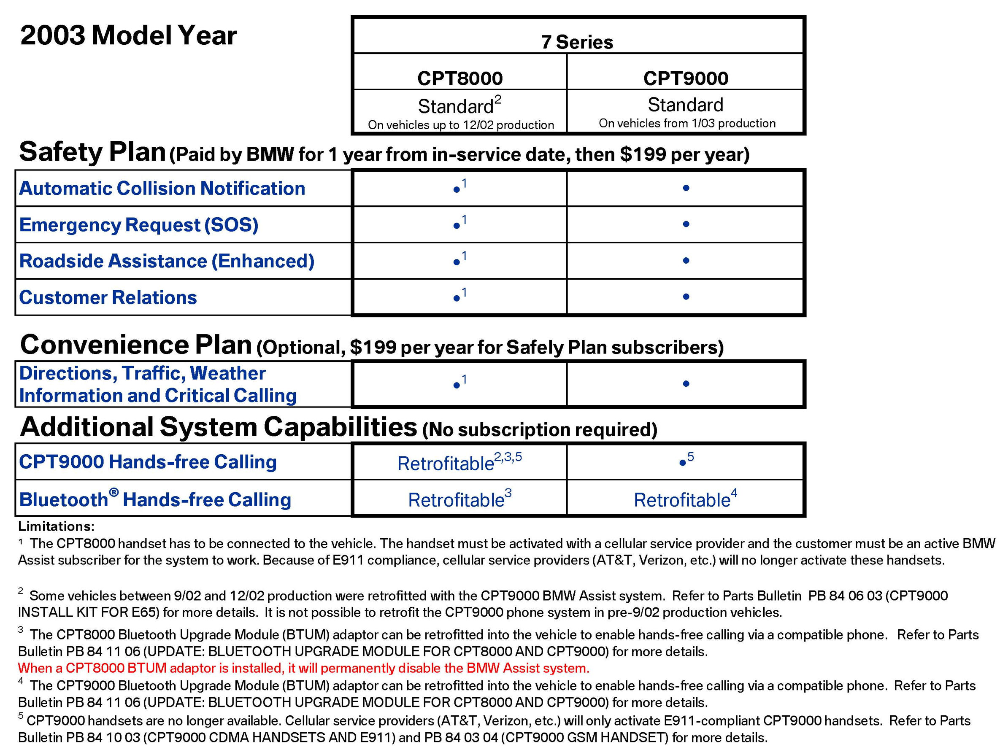
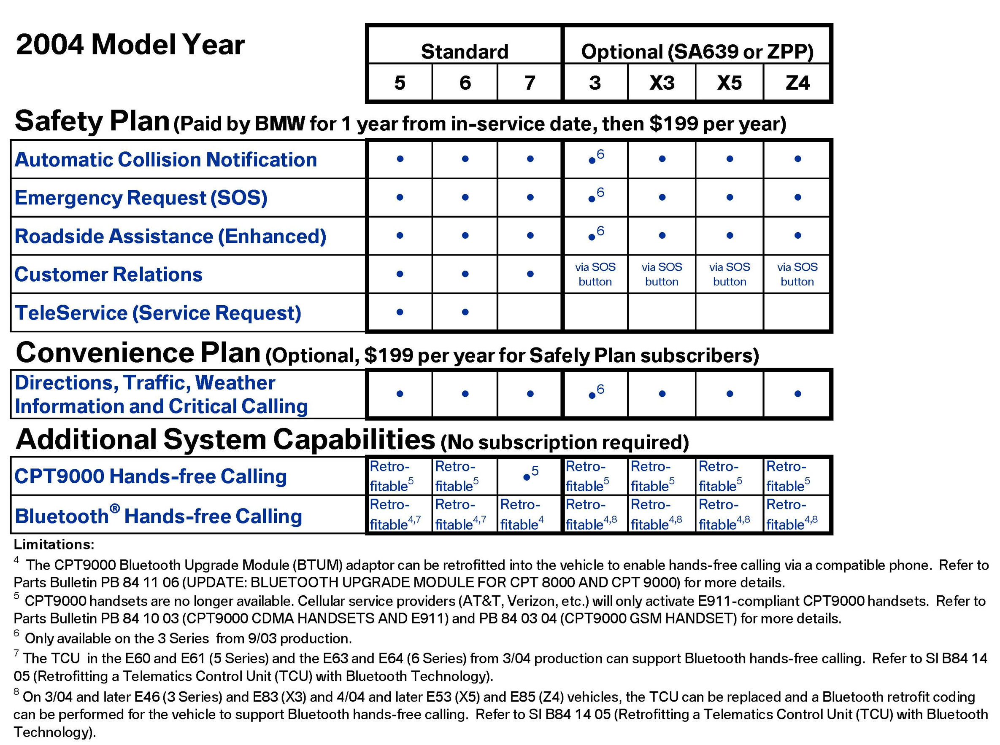
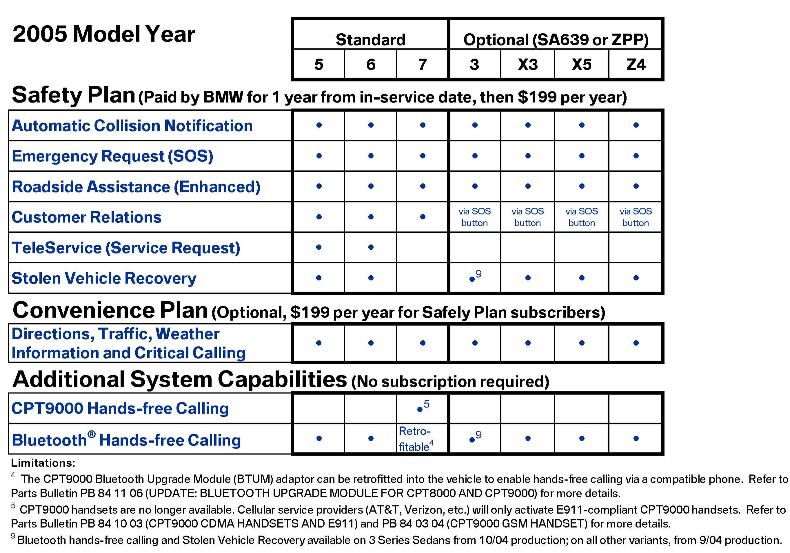
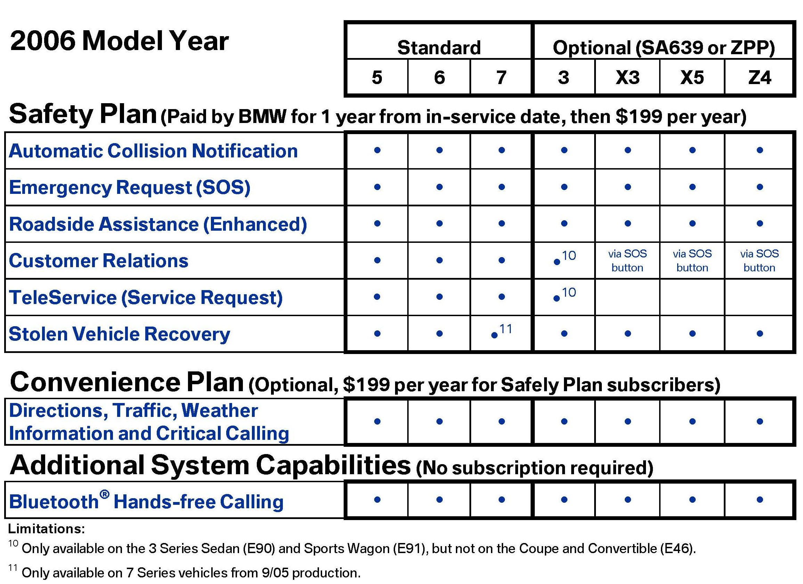
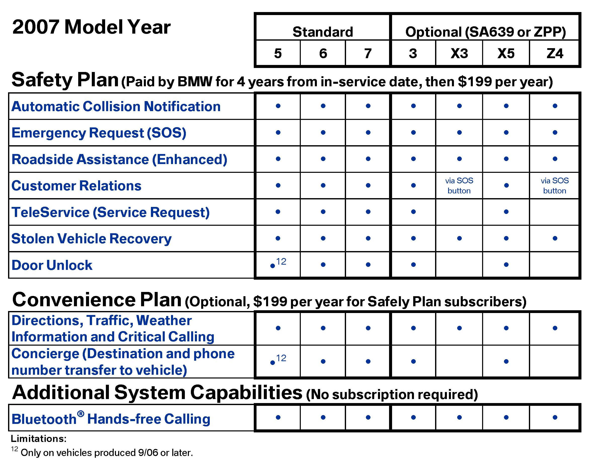
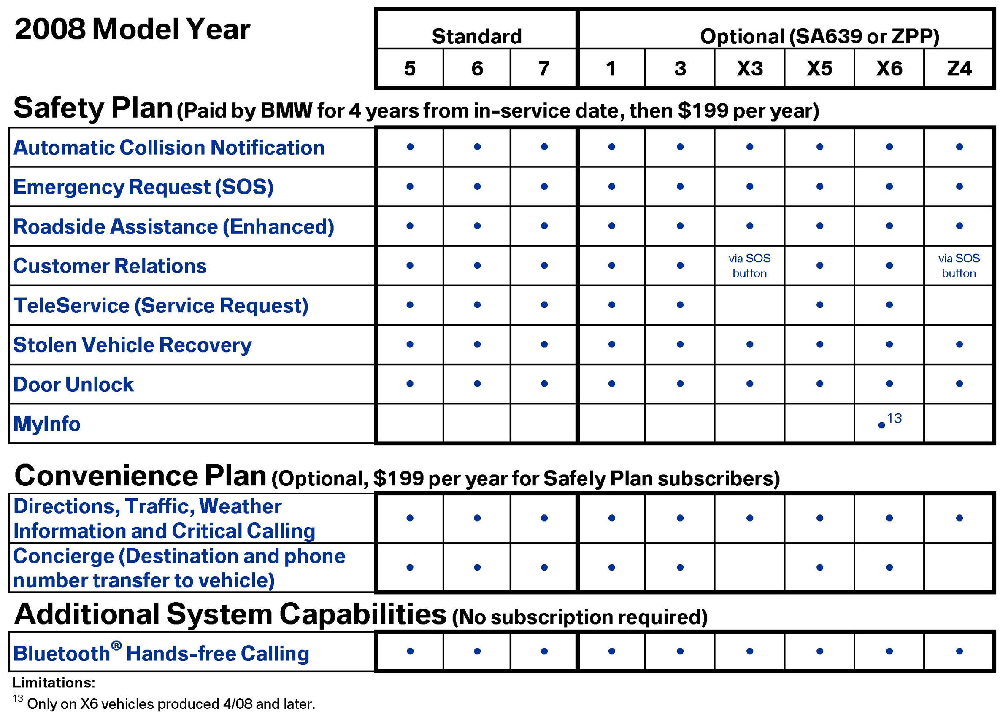
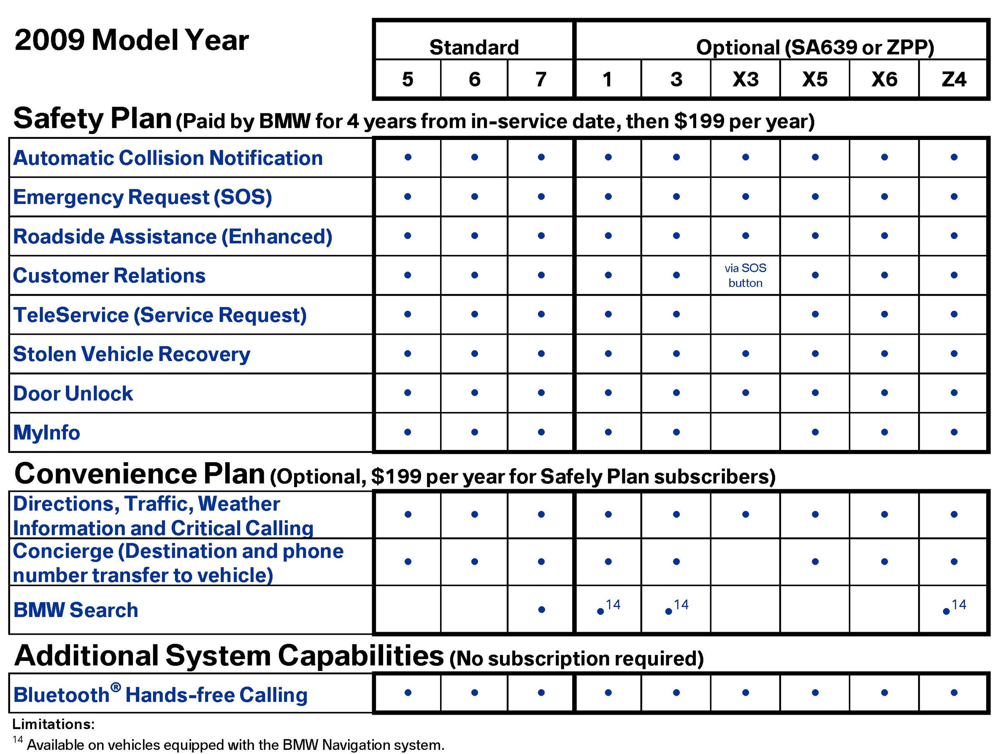
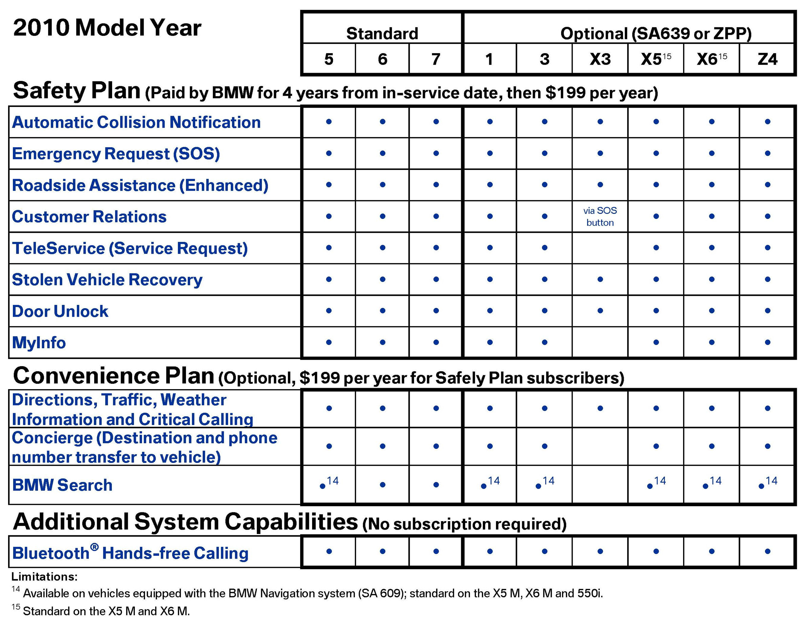

BMW Assist(R) - Capabilities And Services By Model Year
SI B 84 12 09Communication Systems
November 2009
Technical Service
SUBJECT
BMW Assist System Capabilities and Services by Model Year

MODEL
INFORMATION
Each year, the capabilities and services offered with the BMW Assist system have increased. The document provides an overview of features and services by model and year.
PROCEDURE
See attachment.
WARRANTY INFORMATION
For information only








ATTACHMENTS
view PDF attachment B841209_Model_Year_Details_BMW_Assist_Services.

Disclaimer